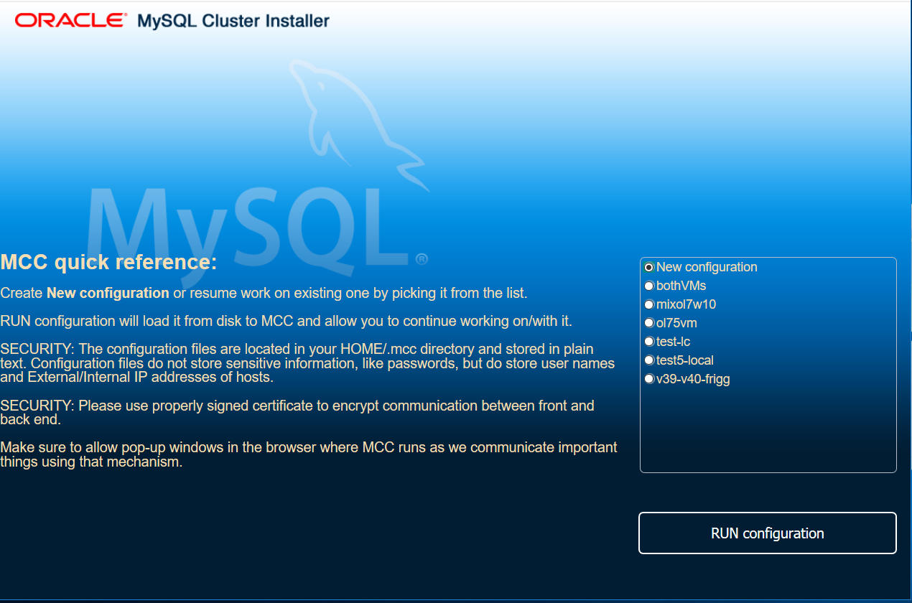
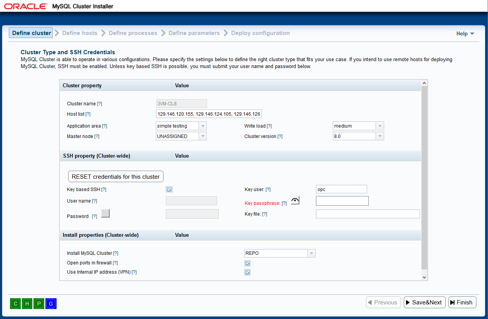
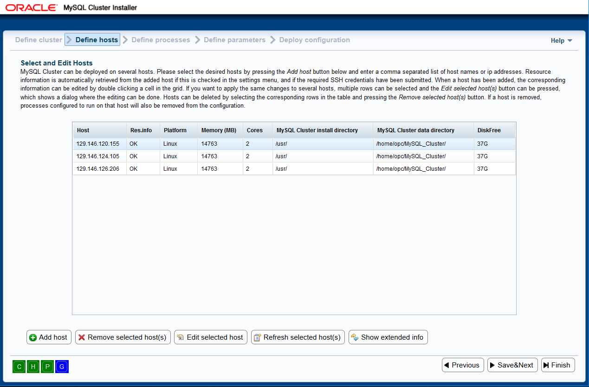
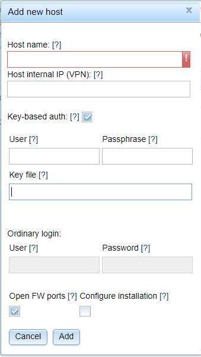
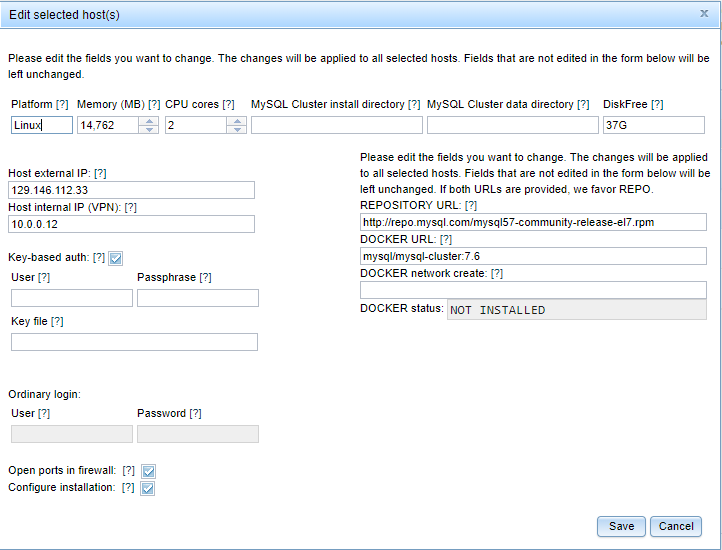
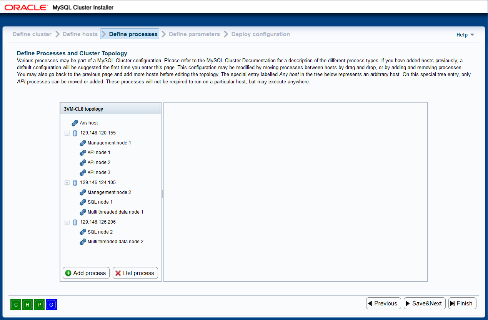
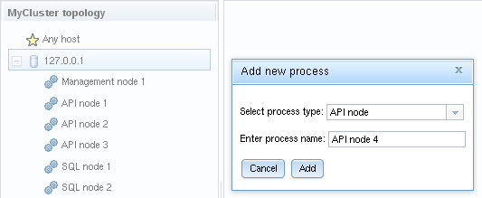
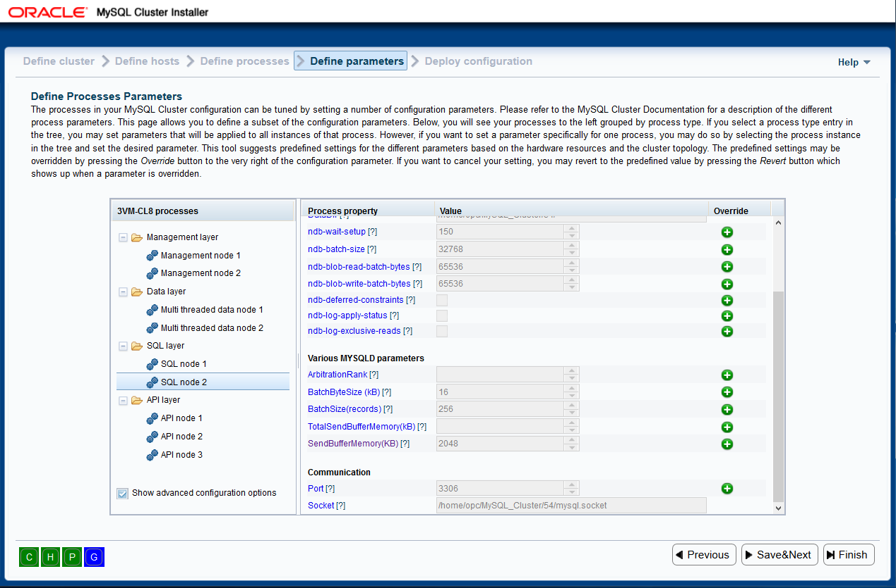

This is the user guide for the MySQL Cluster configuration tool. The aim of this tool is to help you configure and deploy NDB Cluster quickly using GUI. It is also a great learning tool. You can read the user guide sequentially, or you can get help regarding the wizard page you are currently at by choosing the proper entry in the Help menu. This user guide is divided into the following main parts:
The configuration tool is a part of the MySQL Cluster Software, and hence, it does not have a particular name. In this user guide, we refer to the (Auto)installer, configurator, configuration tool, configuration wizard, MCC or simply wizard.
The configuration tool is installed together with the MySQL Cluster software. Please refer to the regarding installation. This section describes the requirements to the environment of the tool, important information about security, and explains how to start the wizard.
The configuration tool may end up in various locations depending on the context (note that the default paths may be overridden at install time for some package formats).
The wizard supports the following command line options:
If no options are given, we default to HTTPS (-S) using self-signed certificate provided with the software. If you want to use HTTP you have to add -H (or --use-http) to command line.
First, you need to identify the directory where the ndb_setup tool is located. This location depends on which package was downloaded and how it was installed. Then, you can start in the following ways:
The configuration tool makes it a top priority to support the following platforms:
Additionally, the tool will attempt, as far as possible, to support the following platforms:
The configuration tool makes it a top priority to support the following browsers:
Additionally, the following browsers are supported as far as possible:
There have been no issues detected with Microsoft Edge browser. However, IE insists on parsing DOJO requirements too early in the process which effectively disables loading DIJIT templates from cache thus forcing load from different domain. As cross- domain scripting is disabled in IE by default, should the problem occur you will have to change Internet options/Security/Miscellaneous/Access datasources across domains to ENABLE or PROMPT for MCC to work. Also, local sites can trigger "compatibility mode" in IE thus rendering happens with some decade old engine. In such case, uncheck Internet options/Advanced/Go to an intranet site for...
The following software must be installed on the host where the configuration tool is started:
If you install the Windows version of the configuration tool, the above software comes bundled and is installed automatically. If you intend to deploy MySQL Cluster only on the same host as the configuration tool is running, you will not need Paramiko.
The following software must be installed on the remote hosts that will be used to deploy the MySQL Cluster:
Three basic security mechanisms may be utilized by the configuration tool:
Two main components comprise the cluster configuration tool:
The two main components communicate using messages wrapped in http(s). The back end can manage MySQL cluster software on any host. If the software is on the same host as the back end itself, the Python interfaces are used for file system operations, process manipulation, etc. If the MySQL Cluster software is on another host, the back end relies on SSH access the hosts, using the Paramiko package for executing commands remotely.
The remainder of this section will describe overall usage of the wizard in terms of navigating between pages, various settings, and how to get help.
The configuration tool is implemented as a wizard with a number of pages covering different steps. There are two ways to navigate between pages. First, the navigation toolbar or breadcrumb trail displays the titles of the various pages. A specific page can be selected by clicking the page title:
In the breadcrumb trail, the title of the current page is highlighted. The advantage of the breadcrumb trail is that you can jump more than one page in either direction.
The second navigation mechanism is to use the three navigation buttons at the bottom of the page. These can be used to advance to the next or previous page, or to go to the very last page. The buttons are disabled as needed, e.g., if you are at the last page, the Next and Finish buttons are disabled, while if you are on the first page, the Prev button is disabled.
At the top right in the wizard window, next to the Help menu, you will find the Settings menu:

The various menu entries in the Settings menu are:
Some of the entries in the menu might be disabled if they are irrelevant due to choices you have made in the wizard. We will come back to that later in this user guide.
At the very top right in the wizard window, next to the Settings menu, you will find the Help menu:

The various menu entries in the Help menu are:
In addition to the help menu, there are tool tips for most of the input widgets. They are displayed when you hover the widget, or there is a small orange question mark next to the widget's label which can be hovered for help. For the configuration parameters, the parameter names are linked to the MySQL Cluster documentation, so if you click the parameter name, the appropriate documentation is displayed in a separate frame.
This section will describe the various wizard pages in detail.
The first page displayed after the ndb_setup command is invoked is the welcome page. Here, you have three major areas:

Once you click CONTINUE button, the back end server will get contacted to read from
chosen configuration and pass decrypted data back. This information, including your
credentials for Cluster/host(s) will then get attached to window.name environment
variable and passed to next page where it will be loaded into in-memory stores.
Providing existing configuration name when prompted for "NEW CONFIGURATION" name is
not treated as error. MCC will simply read the existing configuration and proceed.
VIEW CFG button displays pop-up window with configuration details. Can be blocked by
browser's pop-up blocker.
On define cluster page you can decide on overall settings for the cluster you are going to configure. Setting provided here are "Cluster-wide" meaning for every host added, if there are no per-host entries, these will be used. This allows for quick deployment of simple configurations where there is just localhost or where, for example, credentials are the same for every host in Cluster. There are also receipts for various Cluster settings depending on what you want (see below). Please note that you can override any of the settings here later in the process.

The page contains the following fields:
The Save&Next button sends asynchronous request for your changes to be saved into chosen configuration file in your HOME and advances to next page. If you close the wizard here, no changes you made will be saved.
After the overall cluster properties have been defined, you can refine the host details as well as define new hosts. The wizard page is shown below:

Here, hosts can be added by pressing the Add hosts button and entering
host name or Host external ip address as well as credentials. Field Key_file
should point to private key file to be used with selected host
(i.e. C:\Users\user\.ssh\key_file_name). If the key has default name (id_rsa),
it will be automatically picked up by Paramiko.
Host external ip address: IP address making host accessible from the box MCC is
running on.
Host internal ip address: Imagine you have five hosts Cluster running on Oracle
Cloud then, in this field, you would enter the IP address used inside cloud service
for safer and faster communication between hosts.
The hosts currently entered are displayed in the grid with various pieces of
information. A host, or a selection of hosts, can be removed from the
configuration by pressing Remove selected host(s) button. If processes
have been configured to run on these hosts, the processes will be removed from
the configuration too:

If the setting Automatically get resource information for new hosts is checked in the settings menu (see previous section), the platform name, RAM size and number of CPU cores will be filled in automatically and displayed in the grid. Otherwise, an ellipsis in the grid will indicate that the information was not obtained. The status of the automated resource information fetching is displayed in the Resource info column. Please note that fetching the information may take some time, particularly on Windows hosts. Should the automatic resource fetch fail, correct the host information by clicking Edit selected host button and refetch by clicking Refresh selected host(s) button.
If the SSH user credentials on the define cluster page are changed, the tool will try to re-fetch the hardware information for hosts where a piece of information is missing. When the information is re-fetched, the various fields will be updated. If a field has been edited by the user, the information will not be overwritten by the re-fetched value.
The hardware resource information, platform name, install directory, data directory and free disk space can be edited by the user by clicking the appropriate cell in the grid. It is also possible to select a host and press the button Edit selected host(s). Then, a dialog will appear where various fields can be edited. The edited values will be applied to selected host:

Please note that REPO/DOCKER install details are available for editing only on
this screen.
Turning your attention to two more things: I do not have "user" supplied but
just Passphrase. This is indicative of my key being id_rsa and placed in ~/.ssh.
Also, I am deploying Cluster in VPN so instead of "supra07.no...." I have proper
IP address, not accessible from the outside, in "Host internal IP" box. This will
allow Cluster to skip resolving names.
One should always keep in mind the goal, i.e. deployment of the Cluster processes over any number of hosts. Thus it is best to refer to Hosts via their external IP address. I.e., for anything other than simple deployment just on localhost, you should follow these rules:
[NDB_MGMD]
NodeId=49
HostName=10.172.165.190
DataDir=C:/Users/user/MySQL_Cluster/49/
Portnumber=1186
[NDBD]
NodeId=2
HostName=10.172.162.24
DataDir=C:/Users/user/MySQL_Cluster/2/Finally, HostGrid can have two states, collapsed (default):

and expanded:
toggled by Show/Hide extended info button.
The Save&Next button sends asynchronous request for your changes to be saved into chosen configuration file in your HOME and advances to next page. If you close the wizard here, no changes you made will be saved.
After the hosts have been defined, the next step is to define which processes should be part of the cluster. This page is shown below:

There are two main areas here, there is a process tree to the left, with the various hosts and the processes configured to run on them. To the right is an information pane which displays information about the currently selected item in the tree. When the user enters this page the first time for a cluster configuration, a set of processes is defined as default. The processes defined depend on the number of hosts. If the user goes back to the previous page, removes all hosts, and adds other hosts, then a new set of processes will also be defined.
The processes are of the following main types:
In the process tree to the left, each node has a numeric suffix, which is incremented for each new process of that type. This is just to be able to tell the different processes apart. In the tree, in addition to the hosts you enter, there is a special entry Any host. This special "host" is really just a placeholder where processes that should be allowed to run on an arbitrary host may be located. Usually, a process is configured to run on a specific host, and thus will not be allowed to run on an arbitrary host. If this is desirable, the process should be added to the Any host entry. Please note that only API processes may be located on the special entryAny host.
In the process tree, you can right click a host for a pop up menu displaying an entry Add process. Selecting this entry will take you to the add process dialog. Alternatively, you can select a host, and press the Add process button below the process tree. The add process dialog lets you select among the available process types, and you can also enter an arbitrary process name instead of the default suggestion:

In the tree, you can also right click a process and select delete process from the pop up menu, or select a process and press the delete process button below the process tree. If a process is selected in the process tree, information about that process is displayed in the information pane to the right. You may edit the process name, and you may change the process type to another compatible type. Currently, the only compatible process types are the two variants of the data node; single threaded or multi threaded. If you want to change to an entirely different type, you need to delete the process first, and then add a new process with the desired type.
The Save&Next button sends asynchronous request for your changes to be saved into chosen configuration file in your HOME and advances to next page. If you close the wizard here, no changes you made will be saved.
The page for defining parameters looks somewhat similar to the previous page for defining processes. To the left is a tree with the processes, to the right is a pane with information regarding the currently selected tree item:

However, looking at this in more detail, we see that the process tree is organized differently. On the previous page, it reflected which hosts the processes were running on, whereas on this page, it shows the processes grouped by process type. Thus, the root nodes in the tree are the process types, and the children are the process instances. You may notice that the compatible processes are grouped into the same process type, hence, the two data node processes will both be in the Data layer process type.
Below the process tree, you will see a check box labeled Show advanced configuration parameters. This check box will make advanced parameters visible or hidden in the information pane to the right. If you, e.g., select the Data layer process group, you will see that toggling the check box makes a lot of parameters appear or disappear in the pane to the right. The significance of this visibility is only that the parameters need to be visible for you to be able to change them. The parameters will be set anyway and used in the configuration of the cluster.
Now, the purpose of this page is to define the various configuration parameters for the processes. This can be done in two main ways:
When a process group or process instance is selected, you will see, e.g., the following information in the pane to the right (if an SQL process is selected):

In the information pane shown above, you see the various parameter names, their values, and for some of them, there is also a green button with a plus sign to the right. That button means that the parameter can be overridden. Thus, if you push the button, the input widget for the parameter will be enabled, and you will be able to change its value. The various parameters will have predefined values. If you, e.g., look at the parameter DataDir you will see it is a predefined path. This path is constructed based on the host on which the process will run, taking the data directory you entered for this host on the define hosts page, and appending the node id. All configuration parameters displayed by the tool will have predefined values, and usually, the values may just be left as they are. It is highly recommended that you read the documentation before making changes to the parameter values. Each parameter name is a hyper link into the MySQL documentation, so it is easy to find the relevant information.
If a configuration parameter has been changed, you may revert the change and go back to the predefined value: When the value has been overridden, the green button with a plus sign turns into a big red X, as shown below:

Now, if you press this red X, the change is reverted, and the parameter is reset to the predefined value.
The Save&Next button sends asynchronous request for your changes to be saved into chosen configuration file in your HOME and advances to next page. If you close the wizard here, no changes you made will be saved.
The last page in the wizard is the deployment page. Here, you can inspect the startup commands and actual configuration files that will be applied, you can distribute the configuration files and create the necessary files and directories on the hosts involved, and you can start and stop the cluster you have configured. Currently, "Install" button is not in effect. The page looks similar to the previous one:
To the left, you will find the same process tree as on the previous page. The processes are listed grouped by the process type they belong to. To the right of the process tree, there are two information panes. The upper one will display the startup commands necessary to start the process. For some processes, more than one command may be required, e.g. if initialization is needed. The lower pane will show the contents of the configuration file for the given process. Currently, the only processes having a configuration file are the management nodes. The other processes are configured by means of command line parameters submitted with the startup command, or by getting their configuration parameters by asking the management nodes dynamically.
In the process tree, the icons in front of the processes will change depending on the status of the processes. I.e., when the cluster starts or stops, the icons will turn red (stopped), yellow (starting or stopping) or green (running). This status information is based on querying the management daemon.
Below the process three, you will find four buttons:
Below is an example of a progress bar displayed while starting the cluster:

It is worth noticing that the configuration tool cannot guarantee that the cluster is available for usage when it has been started. Hence, after the processes have been started, you will be informed that the processes are starting, but may need some time to initialize before they are ready for usage.